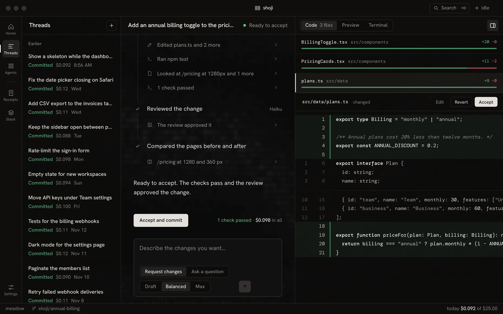
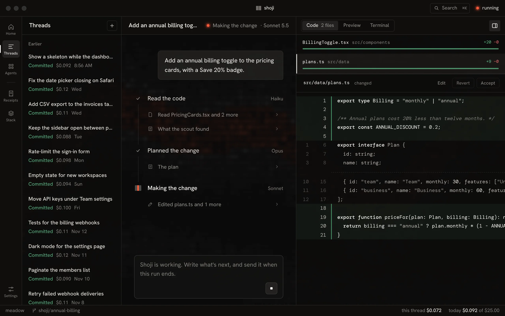
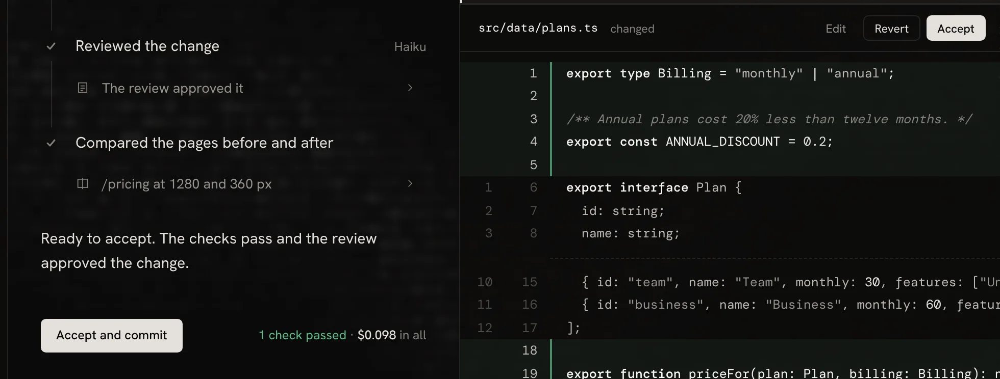
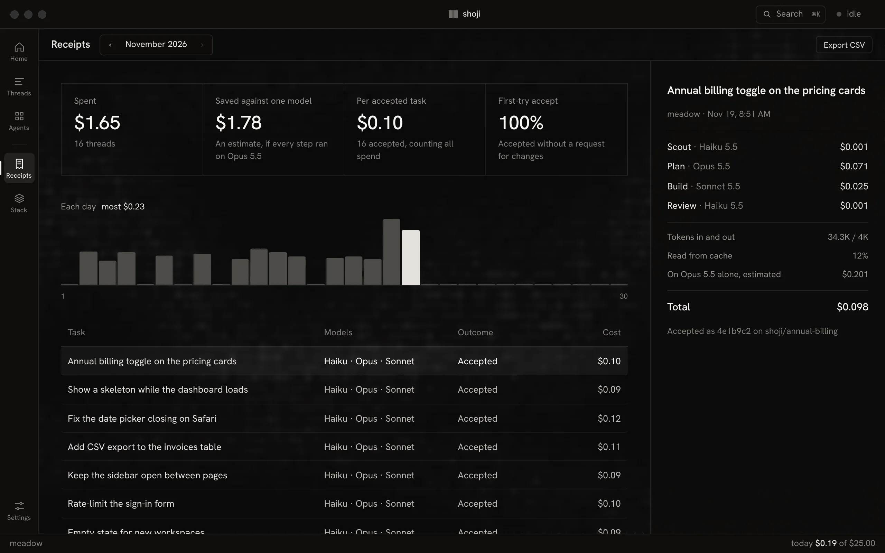
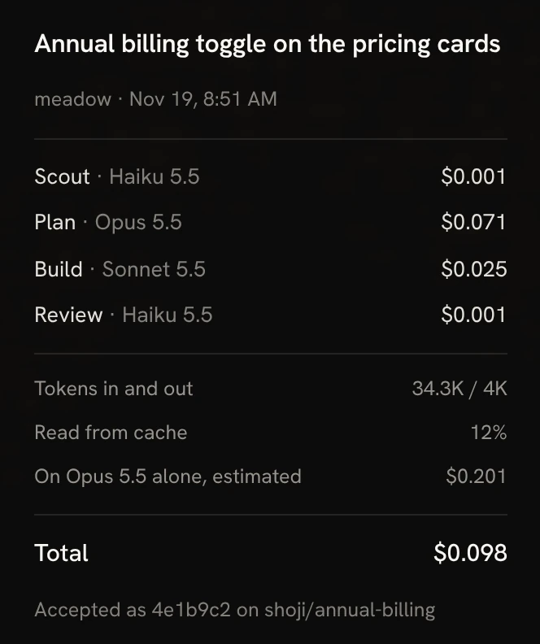
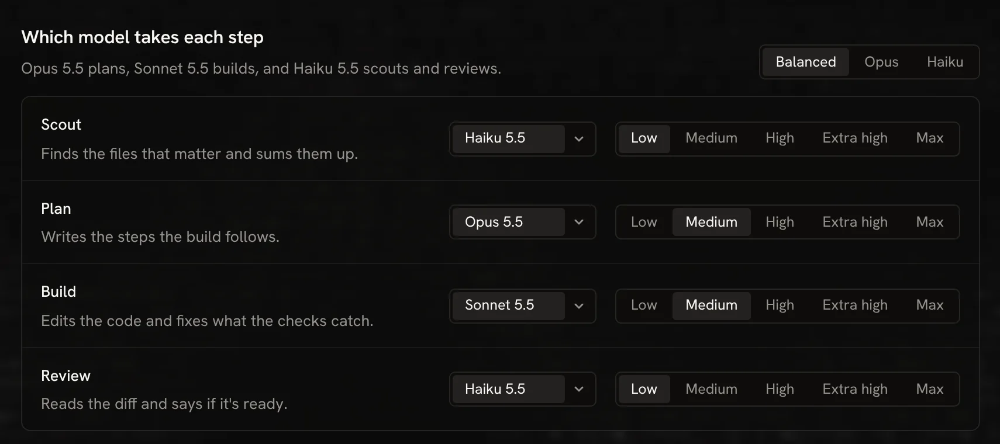
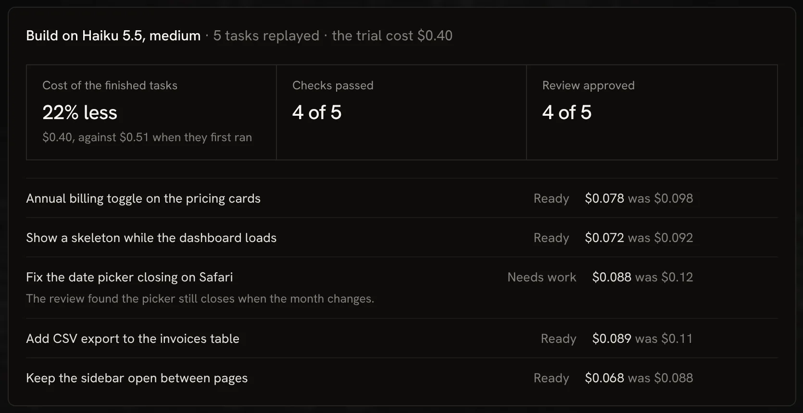
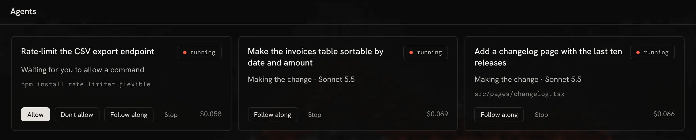
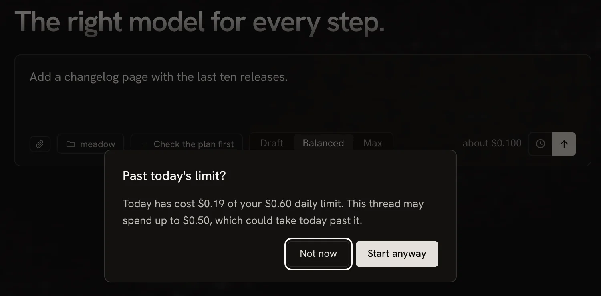
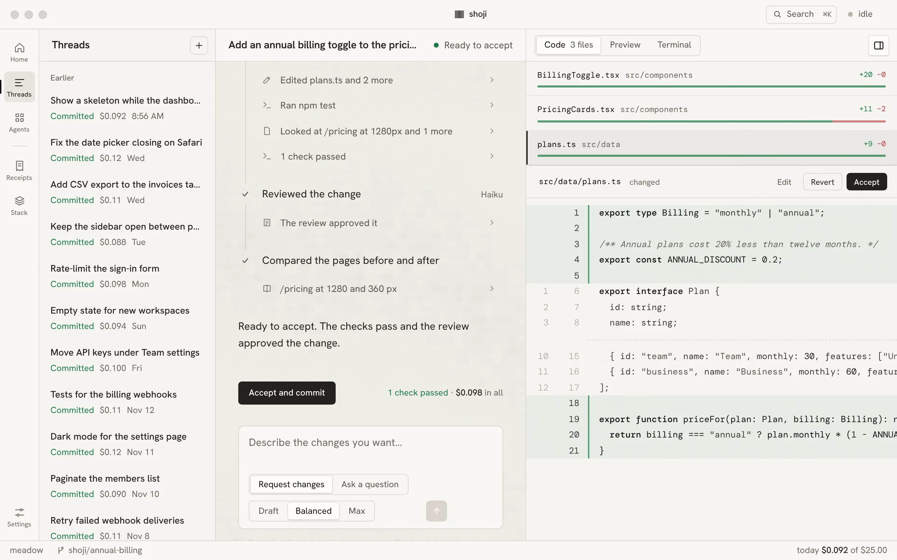

Free for Mac and Windows
{{name}}. {{tagline}}
A desktop app for building software with AI. You describe a change, and a small team of models plans it, builds it and checks it, each one chosen for its step.

The film
Watch one change go all the way through.
From the task you type to the receipt it leaves, in under two minutes. It's the real app, filmed on a sample project.
How it works
A change is a series of steps.
{{name}} gives each step the model that suits it. The strong model plans, where judgment matters. Faster, cheaper models read, build and review.
-
01 · Scout
Read the code
Finds the files that matter and sums them up.
Haiku 5.5$0.001 -
02 · Plan
Plan the change
Writes the steps the build follows.
Opus 5.5$0.071 -
03 · Build
Make the change
Edits the code, runs your tests and fixes what they catch.
Sonnet 5.5$0.025 -
04 · Review
Review the work
Reads the diff and says if it's ready.
Haiku 5.5$0.001 -
05 · You
Accept it
Nothing is committed until you do.
In all$0.098
One sample task: an annual billing toggle on a pricing page. Change any role's model in Stack.
Threads
Every step in view.
The conversation shows each step as it runs, with its model, its work and what it has cost so far. The code opens beside it the moment a file changes.
- CodeEvery changed file with its diff. Comment on a line, then send your notes as one request.
- PreviewYour dev server at 360, 768 or 1280 px, showing this thread's work.
- TerminalYour own shell, in the thread's copy of the project.

You decide
Nothing is committed until you accept it.
Each thread works on its own branch, in its own copy of your project, so your checkout stays as it was. Accept or revert file by file, then commit the rest under your own git name.
{{name}} never pushes on its own. When you're ready, Push and open PR takes you to the pull request.

Receipts
Every task leaves a receipt.
The model behind each step and what it cost, set against running every step on one strong model. Export any month as CSV.


per accepted change than running every step on Opus 5.5.
tasks accepted, the same as Opus alone.
From a test on six real tasks in October 2026.
Stack
Your stack, your call.
Choose the model and effort for each role, or start from Balanced. Before you switch, try the new stack on work you've already accepted.
Which model takes each step
Saved to stack.lock with its history, so you can see what changed and when.

Trial
Replays your latest accepted tasks on another stack, in scratch copies of your project, and tells you what changed.

Watching
Compares each model's week with the four before, and names one that got slower, dearer or worse at its role.
New models
The list of models and prices updates once a day, so a new model needs no new release. You decide when to trial it.
Agents
Several threads at once, and a limit that holds.
Every thread has its own branch and copy, so they never step on each other. Anything that could change your system waits for you.

Commands ask first
Your checks run. Everything else asks.
A role can run your project's checks at any time. Any other command, like installing a package, waits for you to allow it once, always for that project, or not at all.
Limits
Spending stops where you set it.
Each thread has a spending limit, and {{name}} stops before any call that could pass it. A daily limit asks before a new thread could take the day past it.

Built in
Fits the way you already work.
Commands and skills
Reads the same files Claude Code does: your commands, your skills, AGENTS.md and CLAUDE.md.
MCP servers
Paste a server's JSON. Tools that could change something wait for you, like commands.
Pages it can see
Build opens your page in a headless browser at 360, 768 or 1280 px and checks what it shows.
Ask a question
Scout reads the code and answers in the thread. Nothing in the project changes.
Check the plan first
Pause after the plan, then build it or ask for another.
Draft, Balanced, Max
Set what a task is worth. Draft moves steps down a model; Max puts Build on the plan model.
Attach anything
Point at a file with @, or attach screenshots, PDFs and text.
Scheduled tasks
Run a task every day, on weekdays or weekly, inside your daily limit.
Push and open PR
Pushes the thread's branch with your own git sign-in, then opens the pull request page.
Make it yours
Darkroom or paper.
A darkroom theme, and a paper one like the screens the app is named for. Every effect, motion and accent can be turned off in Settings.

Your data
Your code goes to the model, and nowhere else.
Your key stays in the keychain
{{name}} sends it only to Anthropic.
A model sees only what it needs
Only the files a role reads or you attach go to the provider.
Private files never go at all
.env files and keys are off limits to every role. Add your own patterns in Settings.
No account, no server
Receipts and run logs stay on your computer. {{name}} sends no usage data.
Download
Free for Mac and Windows.
Bring your own Anthropic API key and pay only for the models your tasks use. {{name}} is open source, under the MIT license.
macOS
Apple silicon, macOS 12 or later
Download →Windows
Installer, .exe or .msi
Download →Linux
AppImage or .deb, built from the same code
Download →The builds aren't signed yet, so your system asks once before opening one. Here's how to open it.
Questions
Asked and answered.
What does it cost to run?
{{name}} is free. You pay Anthropic for the models your tasks use, with your own API key. The sample task on this page came to $0.098, and Home shows what a task usually costs once you've finished a few.
Which models does it use?
Anthropic's Claude models for now. By default Opus 5.5 plans, Sonnet 5.5 builds, and Haiku 5.5 reads the code and reviews the work. You can put any model on any role in Stack. Other providers come later.
Does my code leave my computer?
Only the parts a role reads or you attach, and only to the model provider. Private files like .env and keys never go at all. There is no {{name}} server.
Do I need an account?
No. You need an Anthropic API key, which stays in your system keychain, and a project in git with at least one commit.
Can it run up a bill while I'm away?
Every thread has a spending limit, and {{name}} stops before any call that could pass it. A daily limit asks before a new thread or a trial could take the day past it, and a scheduled task that could pass it is skipped and says why.
Will it work with my setup?
It follows your project's AGENTS.md and CLAUDE.md, uses your commands, skills and MCP servers, previews your own dev server, and commits with your own git name.
My Mac or Windows won't open it. What do I do?
The builds aren't signed yet. The first time you open {{name}} on a Mac, Control-click the app and choose Open; if macOS still blocks it, allow it under System Settings, Privacy & Security. On Windows, if SmartScreen stops the installer, choose More info, then Run anyway.
Is it open source?
Yes, under the MIT license. The code is on GitHub.